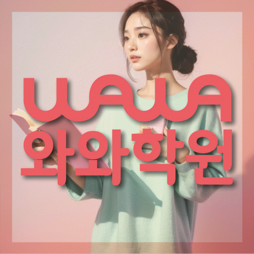
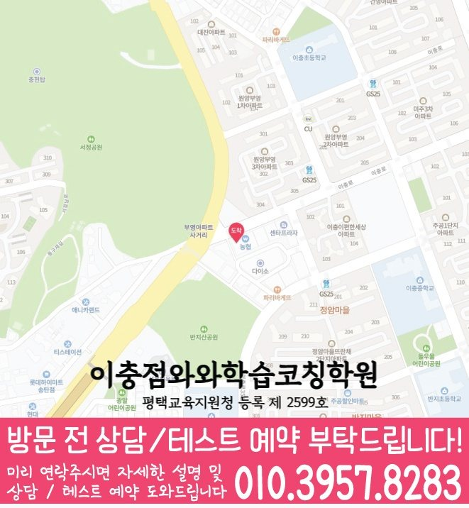

와와학습코칭센터 이충점
경기 평택시 이충로 49-31 삼원프라자 201호
GRADE 5 MATH LOCAL GUIDE
와와학습코칭센터 이충점의 위치와 과목별 가능 학년을 확인하고, 초5 수학 상담에 필요한 학교·학습 자료를 준비해 보세요.
와와학습코칭센터 이충점의 수학 가능 학년 안내: 초5. 현재 수업 시간·반 편성·정원은 상담에서 확인해 주세요.
경기 평택시 이충로 49-31 삼원프라자 201호
현재 반 편성과 시간표는 상담에서 확인
평택교육지원청 등록 제 2599호
통합 상담 전화 010-6839-8283 · 문의할 때 와와학습코칭센터 이충점과 학생의 학년을 말씀해 주세요.
교습비 자료의 과목·수업 시간·횟수와 별도 비용을 상담 내용과 함께 확인해 주세요.
이충상가 농협 옆 삼원프라자 2층 201호로 안내돼 있습니다. 안내 자료에는 1층 정관장 건물을 위치 기준으로 적고 있습니다.
방문 주소: 경기 평택시 이충로 49-31 삼원프라자 201호
평균 오픈 안내 평일 오후 12시 이후
주말 수업 안내 일요일가능
안내 자료의 운영 정보입니다. 현재 방문 시간과 과목별 반 편성은 예약할 때 확인해 주세요. 건물 내 상점과 시설 모습은 촬영·안내 시점에 따라 달라질 수 있습니다.


와와학습코칭센터 이충점 방문을 문의할 때 학생의 학년과 희망 과목을 알려 주세요. 통합 상담 010-6839-8283
아래는 가정에서 활용하는 일반 학습 점검 예시입니다. 현재 학교·교재에서 배우는 내용에 해당할 때 활용하고, 아직 배우지 않은 내용은 현재 진도에 맞춰 확인해 주세요. 학생의 학습 수준과 센터의 실제 수업 구성은 상담에서 확인할 수 있습니다.
수를 나누는 조건인지, 같은 배수를 찾는 조건인지 구분했나요?
직접 확인할 예 12와 18의 공약수는 1, 2, 3, 6이고 최소공배수는 36입니다. 두 결과를 어떤 상황에 쓰는지 말해 보세요.
계산 전 예상한 크기와 소수점 위치가 맞는지 확인했나요?
직접 확인할 예 1.2 × 0.3 = 0.36입니다. 1.2의 3/10을 구하는 그림이나 설명으로 답이 1.2보다 작아지는 이유를 확인해 보세요.
면을 덮는 크기를 묻는지, 테두리 길이를 묻는지 표시했나요?
직접 확인할 예 가로 7cm, 세로 4cm인 직사각형의 넓이는 28cm²이고 둘레는 22cm입니다. 답의 단위가 다른 이유를 설명해 보세요.
틀린 문제에서 놓친 조건, 처음 막힌 계산 줄, 답을 확인한 방법을 적어 보세요. 해설을 덮고 다시 풀 때 같은 줄에서 멈추는지 확인하고, 해결하지 못한 부분은 질문으로 남겨 주세요.
교재 이름·쪽수와 혼자 해결한 부분을 함께 표시하면 상담에서 현재 학습 상태를 설명하기 쉽습니다.
제공 자료의 초등학교 참고 목록: 복창초등학교, 서정리초등학교, 송일초등학교, 지장초등학교.
학교 목록은 지역 참고 자료입니다. 해당 학교별 반 운영이나 시험 대비 수업을 확인한 정보는 아닙니다. 학생이 사용하는 교재, 실제 과목명·진도, 시험 범위 안내와 최근 오답을 준비해 주세요.
계산 과정을 어디까지 설명해야 하는지, 오답의 이유를 어떻게 확인하는지, 다시 풀 문제와 결과를 어떻게 기록하는지 질문해 보세요.
위의 센터 정보에 적힌 가능 학년을 확인하고 현재 시간표·반 편성·과목 범위를 문의해 주세요. 이 질문과 학습 예시는 센터의 확정된 수업 방식이나 제공 서비스를 뜻하지 않습니다.
와와학습코칭센터 이충점의 수학 가능 학년 안내: 초5. 현재 수업 시간·반 편성·정원은 상담에서 확인해 주세요.
학교 참고 목록은 복창초등학교, 서정리초등학교, 송일초등학교, 지장초등학교입니다. 학교별 전용 반 개설 여부는 별도로 확인해 주세요. 재학 학교와 학년을 알려 주고 학교 학습지, 단원평가 자료와 사용하는 교재를 바탕으로 상담할 수 있습니다.
수업 조건을 확인하는 초5 수학 상담에서는 맞고 틀린 결과보다 학생이 받은 설명과 다음 행동이 분명한지 확인하세요. 수업 기록에 ‘주말에 누적 오답 두 문제를 골라 풀이 근거까지 다시 적어 보기’의 실행 여부와 다음 확인일을 함께 남기면 가정에서도 흐름을 살펴볼 수 있습니다.
센터의 교습비 자료와 상담에서 과목·횟수·수업 시간을 대조해 주세요. 교재비 등 별도 비용, 결석 시 보강 기준과 과제 피드백 방식도 함께 확인하면 좋습니다.
CONSULTATION SCENARIO
아래 두 장면은 초5 수학 상담 전에 준비할 자료와 질문을 정리한 점검 예시입니다.
가정 상담 장면: 서정동의 한 학부모가 최근 자료 가운데 조건 해석과 문제 해결에서 막힌 문제와 도형과 측정 관계 관련 학습 기록을 나눠 가져오고, 초5 수학 상담에서 제안받을 첫 주 확인 항목과 다음 점검일을 질문하는 상황을 가정할 수 있습니다. 이 초5 수학 상담 장면은 실제 이용 후기나 특정 학생의 성과가 아니며, 상담 준비용 가상 예시입니다. 서정동에서 초5 수학을 공부하는 학생의 학습 결과는 출발점과 실천 정도에 따라 달라질 수 있습니다.
비교 상담 장면: 서정동에서 초5 수학을 공부하는 학생의 학교 일정과 통학 가능 시간을 적어 두고 와와학습코칭센터 이충점에서 누적 오답 재확인 관련 기록을 확인하는 방식, 과제 조절 기준, 학부모 공유 항목을 묻는 장면을 생각해 볼 수 있습니다. 이 초5 수학 상담 장면에서 비교할 항목은 학생의 실제 자료와 가능한 일정에 맞춰 조정해야 합니다.



와와학습코칭센터 이충점의 위치와 서정동 생활권을 기준으로 초5 수학 상담 정보를 확인합니다. 방문 전 실제 이동 동선과 상담 가능 시간을 함께 확인해 주세요.